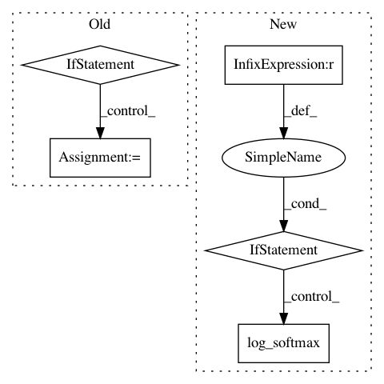

1fd1fbb4b677f10d8e2181e7176daabad7327a72,python/baseline/pytorch/tagger/model.py,TaggerModelBase,create,#Any#Any#Any#,62
Before Change
pytorch_linear(hsz, len(model.labels)),
))
if model.use_crf:
if model.crf_mask:
assert model.span_type is not None, "A crf mask cannot be used without providing `span_type`"
model.crf = CRF(
len(labels),
(Offsets.GO, Offsets.EOS), batch_first=False,
vocab=model.labels, span_type=model.span_type, pad_idx=Offsets.PAD
)
else:
model.crf = CRF(len(labels), (Offsets.GO, Offsets.EOS), batch_first=False)
model.crit = SequenceCriterion(LossFn=nn.CrossEntropyLoss)
print(model)
return model
After Change
mask=constraint
)
else:
if constraint is not None:
constraint = F.log_softmax(torch.zeros(constraint.shape).masked_fill(constraint, -1e4), dim=0)
model.register_buffer("constraint", constraint.unsqueeze(0))
else:
model.constraint = None
model.crit = SequenceCriterion(LossFn=nn.CrossEntropyLoss)
print(model)
return model
In pattern: SUPERPATTERN
Frequency: 3
Non-data size: 5
Instances
Project Name: dpressel/mead-baseline
Commit Name: 1fd1fbb4b677f10d8e2181e7176daabad7327a72
Time: 2018-11-19
Author: blester125@users.noreply.github.com
File Name: python/baseline/pytorch/tagger/model.py
Class Name: TaggerModelBase
Method Name: create
Project Name: pyannote/pyannote-audio
Commit Name: 94b472f63d03fca865038f0e6ebe263e55862b5d
Time: 2018-12-18
Author: bredin@limsi.fr
File Name: pyannote/audio/labeling/models.py
Class Name: StackedRNN
Method Name: forward
Project Name: dmlc/dgl
Commit Name: 927d2b319bc7a6c31c63ad64e6124477c2a5b583
Time: 2020-12-28
Author: mufeili1996@gmail.com
File Name: examples/pytorch/ogb/ogbn-products/graphsage/main.py
Class Name: SAGE
Method Name: inference